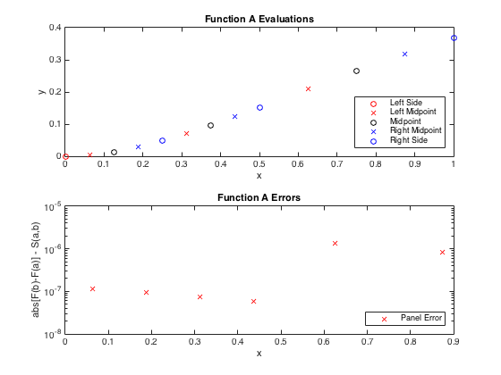
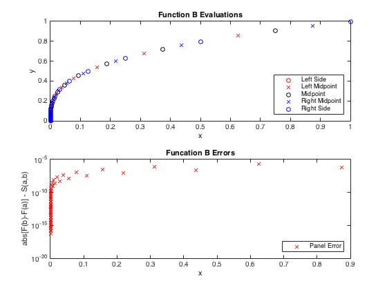

Matt McFarland
E91, Lab5, question 3
Contents
function [] = q3() % make this script a function to include AQ.m below
close all; clear all;
Constants and In-Line Functions
Functions
Fa = @(x) ((x.^2) .* exp(-x));
Fb = @(x) (x.^(1/3));
% Integral of Functions A and B from limit x=a to x=b
RealArea_a = @(a,b) (a.*(a+2)+2).*exp(-a) - (b.*(b+2)+2).*exp(-b); % Calculated with Wolfram Alpha
RealArea_b = @(a,b) (3/4)*(b^(4/3) - a^(4/3));
Open Data File
data_files = ['q3_data1.txt';'q3_data2.txt']; ptr1 = fopen('data1.txt','w+'); ptr2 = fopen('data2.txt','w+');
Constants
from = 0; % Integral start to = 1; % Integral end error = 1e-5; % error threshold to be distributed
Calculate Adaptive Quadrature for Function A
The Adaptive Quadrature function will recursively call itself until the error is uniformly distributed
Area_A = AQ(Fa, 0, 1, error, RealArea_a,ptr1);
fclose(ptr1);
Calculate Adaptive Quadrature for Function B
Area_B = AQ(Fb, 0, 1, error, RealArea_b,ptr2);
fclose(ptr2);
Print Calculated Quadratures
fprintf('Error threshold = %e\n',error); fprintf(' Function A has quadrature = %f \n Function B has quadrature = %f\n', Area_A, Area_B);
Error threshold = 1.000000e-05 Function A has quadrature = 0.160605 Function B has quadrature = 0.749996
Each row represents a panel's stored information
A_data = load('data1.txt'); B_data = load('data2.txt'); DisplayAQ(A_data,'Function A Evaluations','Function A Errors'); DisplayAQ(B_data,'Function B Evaluations','Funcation B Errors'); 
end % end q3 function script
Define the Adaptive Quadrature Equation
function [ Area ] = AQ(func,left_x, right_x, error, RealFunc, f_ptr)
Recursive Adaptive Quadrature Function
Applies the adaptive quadrature recursive strategy until the error threshold is reached Will plot the x and f(x) values evaluated to reached threshold accuracy
Use a conservative error reduction of a factor of 10
threshold = 10;
Calculate midpoint and h
midpoint = (left_x + right_x)/2;
h1 = (right_x - left_x)/2;
Get function evaluations at left, right and mid points in bound
f_left = func(left_x);
f_right = func(right_x);
f_mid = func(midpoint);
Calculate quadrature for total, left and right segments
Use Simpson Rule
Total_Area = h1/3 * (f_left + 4*f_mid + f_right);
Split left and right halves and apply Simpson's Rule on those segments
h2 = h1 / 2;
x_quarter = (left_x + midpoint) / 2;
x_3quarter = (midpoint + right_x) / 2;
f_quarter = func(x_quarter);
f_3quarter = func(x_3quarter);
Left_Area = h2/3 * (f_left + 4*f_quarter + f_mid);
Right_Area = h2/3 * (f_mid + 4*f_3quarter + f_right);
Evaluate if error threshold has been reached
If it hasn't, apply Adaptive Quadrature on each segment half
if ( abs(Total_Area - Left_Area - Right_Area) < (threshold*error) ) Area = Left_Area + Right_Area; % print all data points of evaluation for this panel fprintf(f_ptr,'%f %f %f %f %f %f %f %f %f %f ', ... left_x, x_quarter, midpoint, x_3quarter, right_x, ... f_left, f_quarter, f_mid, f_3quarter, f_right); % print error for this segment % x1 x2, left_error right_error fprintf(f_ptr,'%f %f %.25f %.25f\n', ... x_quarter, x_3quarter, ... abs(Left_Area - RealFunc(left_x,midpoint)), ... abs(Right_Area - RealFunc(midpoint,right_x)) ); else Area = AQ(func,left_x,midpoint,error/2,RealFunc,f_ptr) + ... AQ(func,midpoint,right_x,error/2,RealFunc,f_ptr); end
end % AQ function definition function [] = DisplayAQ( data ,title1, title2) x_left = data(:,1); x_quarter = data(:,2); x_mid = data(:,3); x_3quarter = data(:,4); x_right = data(:,5); f_left = data(:,6); f_quarter = data(:,7); f_mid = data(:,8); f_3quarter = data(:,9); f_right = data(:,10); Left_err = abs(data(:,13)); Right_err = abs(data(:,14)); figure() subplot(2,1,1) plot( x_left, f_left, 'or',... x_quarter, f_quarter, 'xr',... x_mid, f_mid, 'ko',... x_3quarter, f_3quarter, 'xb',... x_right, f_right, 'bo' ... ); legend('Left Side','Left Midpoint','Midpoint','Right Midpoint','Right Side','Location','southeast') xlabel('x') ylabel('y') title(title1); subplot(2,1,2) semilogy( x_quarter, Left_err,'rx', ... x_3quarter, Right_err,'rx' ... ); legend('Panel Error','Location','southeast') xlabel('x') ylabel('abs{[F(b)-F(a)] - S(a,b)}') title(title2); end